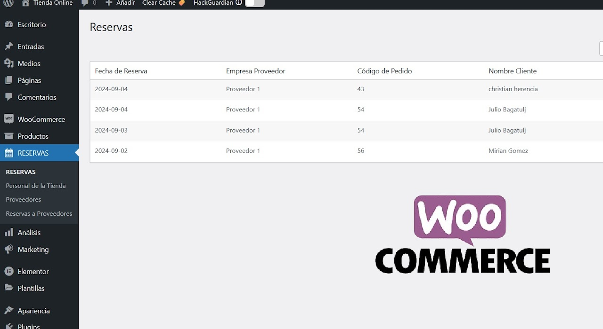
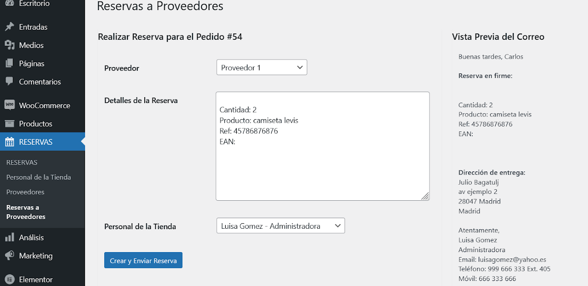
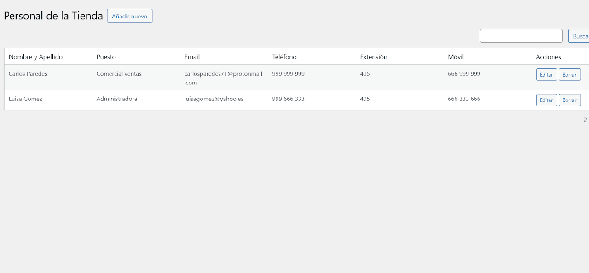

Reserva de productos a Proveedores - Plugin WordPress con WooCommerce

Reserva de productos a proveedores envió por email versión 1.0
Es plugin muy útil en la gestión de envió de correo a proveedores para realizar reserva de pedidos. Dicha gestión incluye un crear un listado personal de tienda y crear varias empresas o contactos de proveedores.
La vista diseño es adaptable a dispositivos móviles.
$ 18.99 Dólares

INSTRUCCIONES:
Reservas a Proveedores para WooCommerce
Descripción
El plugin "Reservas a Proveedores" es una extensión para WooCommerce que permite gestionar y automatizar el proceso de reserva de productos a proveedores basado en los pedidos de los clientes.
Características
- Gestión de proveedores con información detallada.
- Creación automática de reservas a proveedores basadas en pedidos de WooCommerce.
- Interfaz intuitiva para realizar reservas manualmente.
- Vista previa en tiempo real del correo electrónico de reserva.
- Envío automático de correos electrónicos a proveedores con detalles de la reserva.
- Listado y búsqueda de reservas realizadas.
Nota: Si tuviera algún problema con la instalación, le brindamos el soporte gratuito. Contacte con nosotros para cualquier duda y estaremos encantados de ayudarle. Email: chrishb2000@gmail.com
Más imagenes
